♻️ Introducción
El presente proyecto final consiste en el diseño y fabricación de un basurero clasificador inteligente, desarrollado con el objetivo de facilitar la separación de residuos de manera automática. La propuesta busca aportar a una mejor gestión de la basura, reduciendo errores al momento de clasificar los desechos y promoviendo prácticas más responsables con el ambiente.
Para su desarrollo se integraron herramientas de diseño, electrónica, fabricación digital y análisis de requerimientos. El sistema funciona mediante un mecanismo accionado por un servomotor, el cual permite mover la parte central del basurero para dirigir el residuo hacia el contenedor correspondiente.
📋 Análisis QFD
Tabla QFD
La primera etapa del proyecto consistió en realizar una tabla QFD, también conocida como Casa de la Calidad. Esta herramienta permitió analizar las necesidades del usuario y relacionarlas con las características técnicas que debía tener el producto.

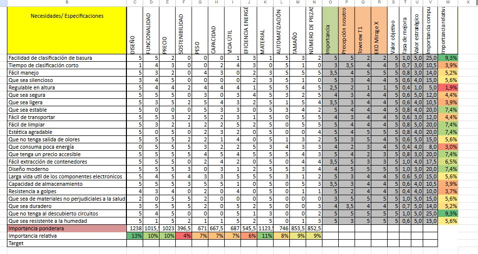
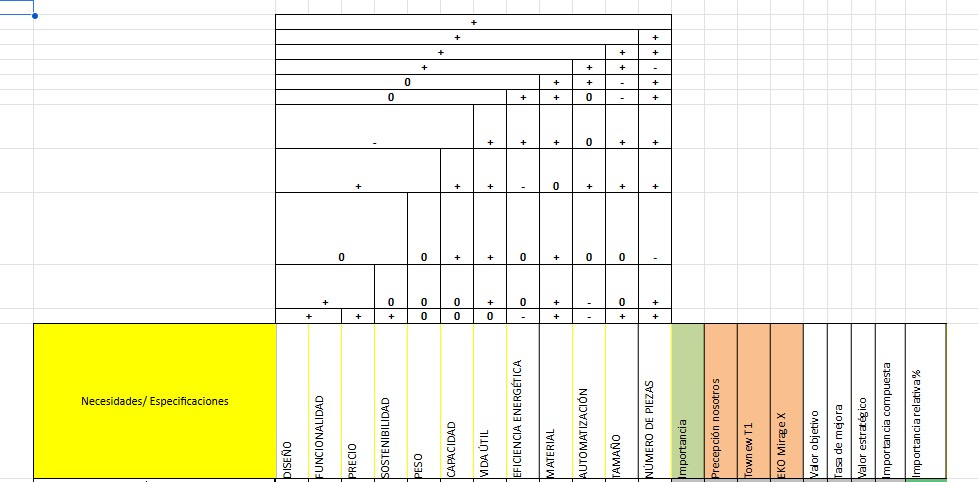
💡 Ideación y Bocetos
Generación de Ideas
Después del análisis QFD, el grupo realizó una lluvia de ideas para definir cómo sería posible construir el basurero clasificador inteligente. En esta etapa se analizaron diferentes alternativas de diseño, considerando aspectos como el tamaño del prototipo, la ubicación de los contenedores, el movimiento de la parte central, la facilidad de uso y la integración de los componentes electrónicos.
Esta fase permitió transformar una idea inicial en una propuesta más clara y funcional. Se buscó que el basurero no solo cumpliera con la clasificación de residuos, sino que también tuviera una estructura práctica, ordenada y fácil de comprender para el usuario.
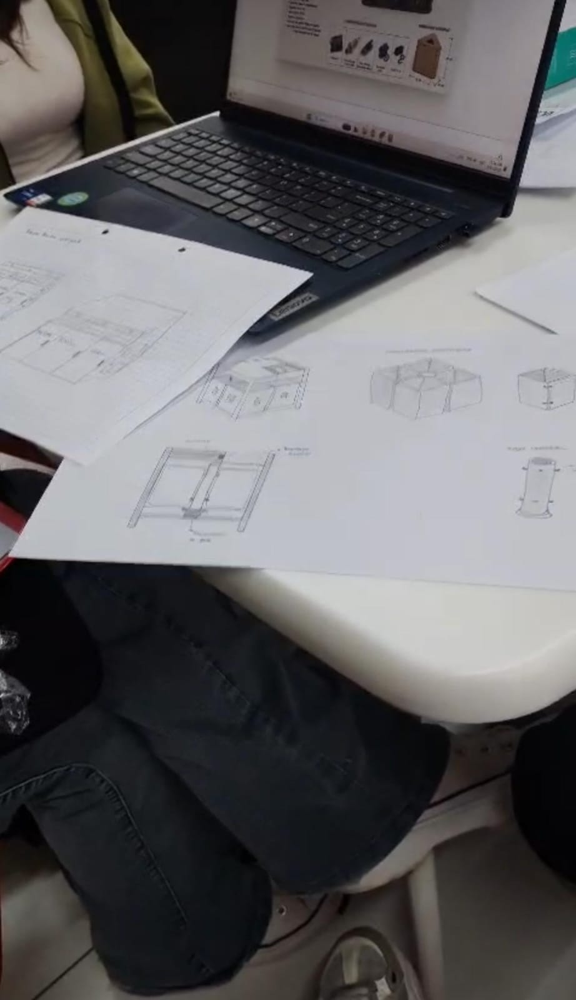
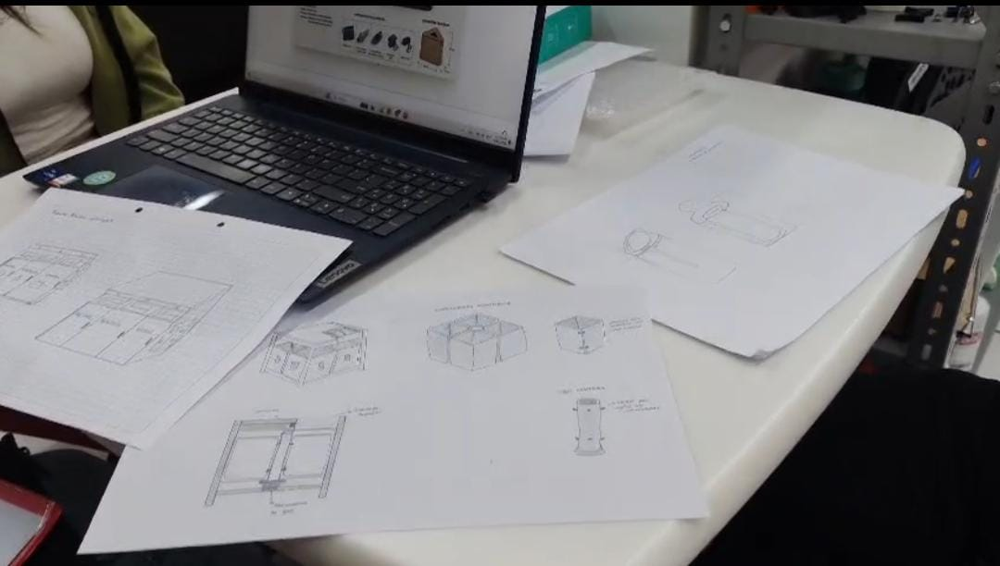
Boceto Seleccionado
Luego de comparar las propuestas planteadas, se escogió el boceto que mejor se adaptaba al funcionamiento esperado del sistema. El diseño seleccionado permite ubicar los contenedores alrededor de un mecanismo central móvil, facilitando que la basura sea dirigida hacia el recipiente correspondiente.
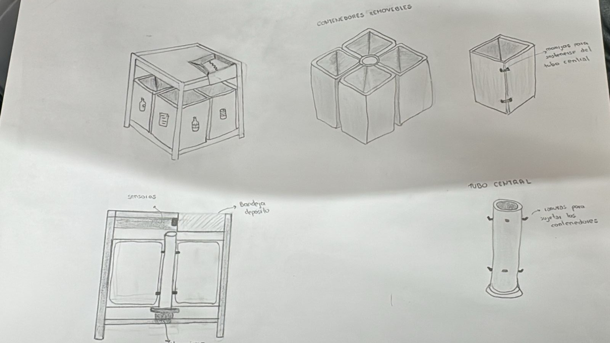
👥 Organización del Equipo
Distribución de Actividades
Para desarrollar el proyecto de manera más eficiente, el grupo se dividió en dos subgrupos de trabajo. Kerly Morales y Camila Barros se encargaron del diseño del basurero, el modelado de los contenedores y la fabricación de las piezas mediante impresión 3D.
Por otro lado, Jairo Andrade y Domenica Peña se enfocaron en la parte electrónica, el funcionamiento del sistema, el control del servomotor, el diseño de la placa en KiCad y la elaboración de las pistas de cobre. Esta división permitió avanzar de forma organizada, integrando posteriormente ambas partes en un solo prototipo funcional.
🧩 Diseño e Impresión 3D
Diseño de Contenedores
El diseño del basurero se desarrolló considerando la ubicación de los contenedores, el espacio para la parte móvil central y la integración de los componentes electrónicos. Esta etapa permitió definir la forma final del prototipo.

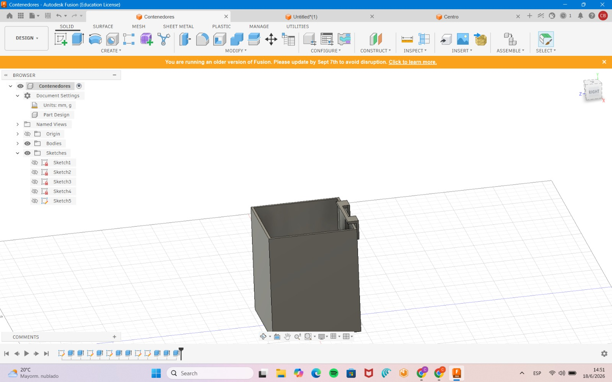
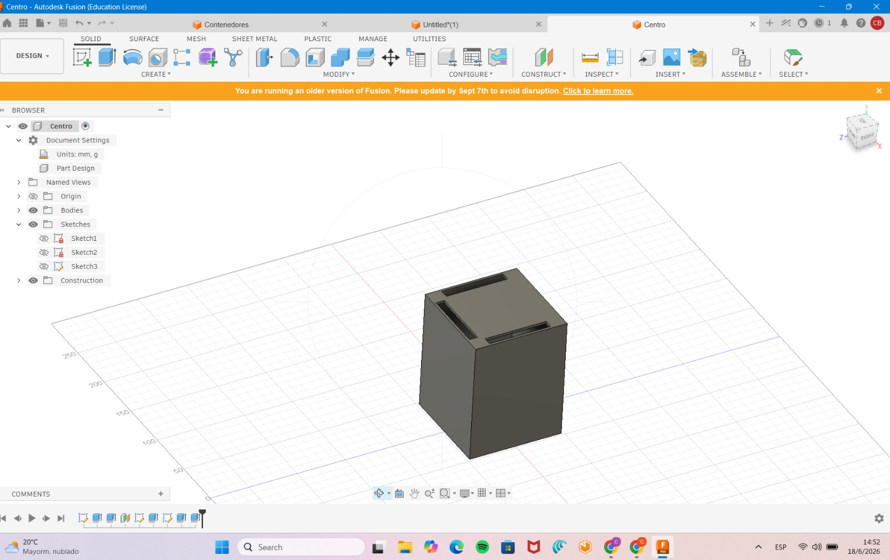

Impresión 3D
Una vez definidos los diseños, se procedió a imprimir los contenedores y las piezas principales del prototipo. La impresión 3D permitió fabricar componentes personalizados y adaptados al funcionamiento del sistema.

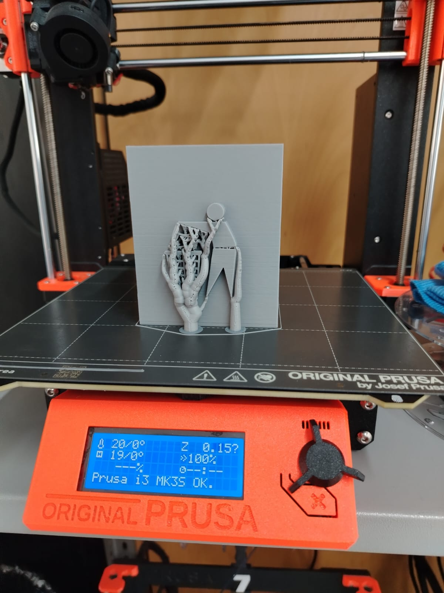
⚙️ Sistema Electrónico y Funcionamiento
Clasificación Automática de Residuos
El sistema electrónico representa una de las partes más importantes del proyecto, ya que permite que el basurero funcione de manera automática y no dependa únicamente de la intervención del usuario. Su propósito principal es controlar el movimiento de la parte central del prototipo para dirigir cada residuo hacia el contenedor correspondiente.
El funcionamiento se basa en un mecanismo accionado por un servomotor. Cuando el sistema detecta el tipo de basura, el servomotor gira hasta una posición determinada, alineando la parte central del basurero con el recipiente adecuado. De esta manera, el residuo cae directamente en el contenedor correcto, haciendo que el proceso de clasificación sea más práctico, ordenado e innovador.
La parte central del basurero actúa como un canal de distribución, mientras que el servomotor se encarga de posicionarla de acuerdo con la clasificación requerida. Esta integración entre diseño mecánico y control electrónico permite que el prototipo tenga un funcionamiento dinámico y llamativo, demostrando cómo la automatización puede aplicarse a soluciones cotidianas relacionadas con el cuidado ambiental.
Durante el desarrollo también se realizaron pruebas de movimiento, calibración de ángulos y verificación del comportamiento del sistema. Estas pruebas fueron necesarias para asegurar que el mecanismo respondiera correctamente, que el giro del servomotor fuera preciso y que el residuo pudiera caer en el lugar indicado sin obstrucciones.
Gracias a este sistema, el basurero clasificador inteligente se convierte en una propuesta funcional y moderna, capaz de unir tecnología, diseño y conciencia ambiental en un solo prototipo.
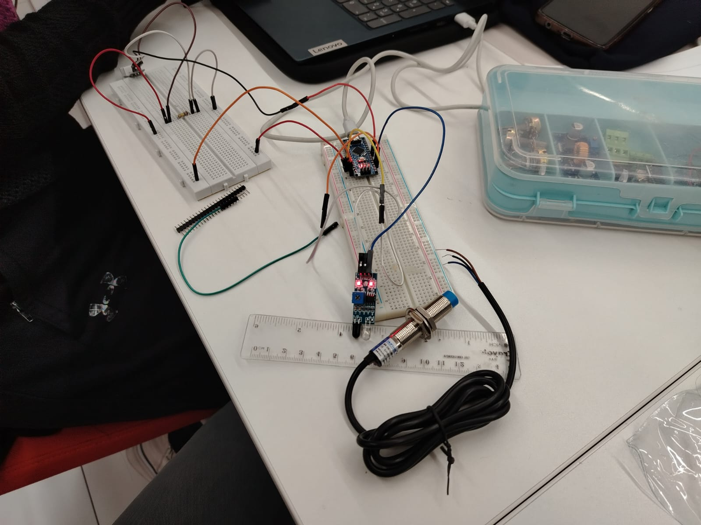
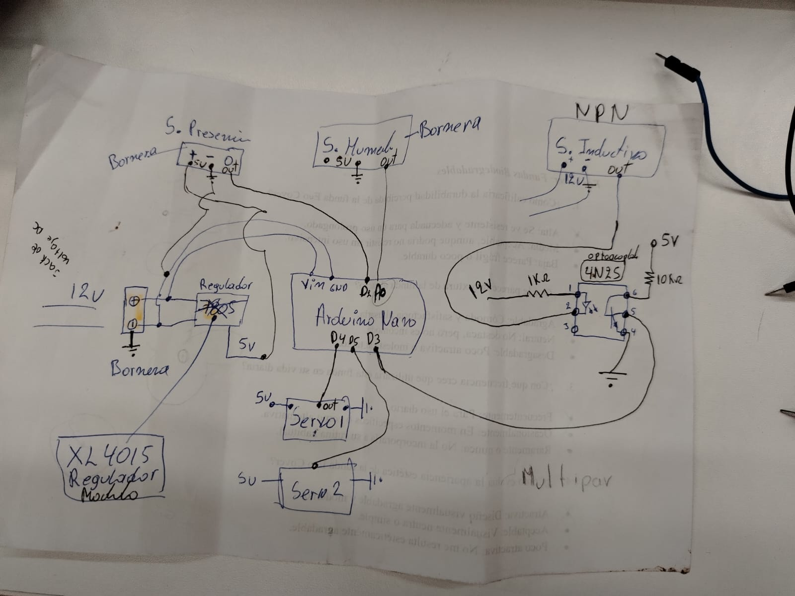
🔌 Diseño de Placa en KiCad
Esquemático y PCB
También se realizaron los esquemas de la placa electrónica en KiCad. Esta etapa permitió organizar las conexiones del circuito, ubicar los componentes y preparar el diseño para su posterior fabricación.


Fabricación de Pistas
Luego del diseño de la placa, se procedió a realizar las pistas de cobre mediante una máquina de desbaste con láser. Este proceso permitió fabricar la placa física para conectar los componentes electrónicos del sistema.

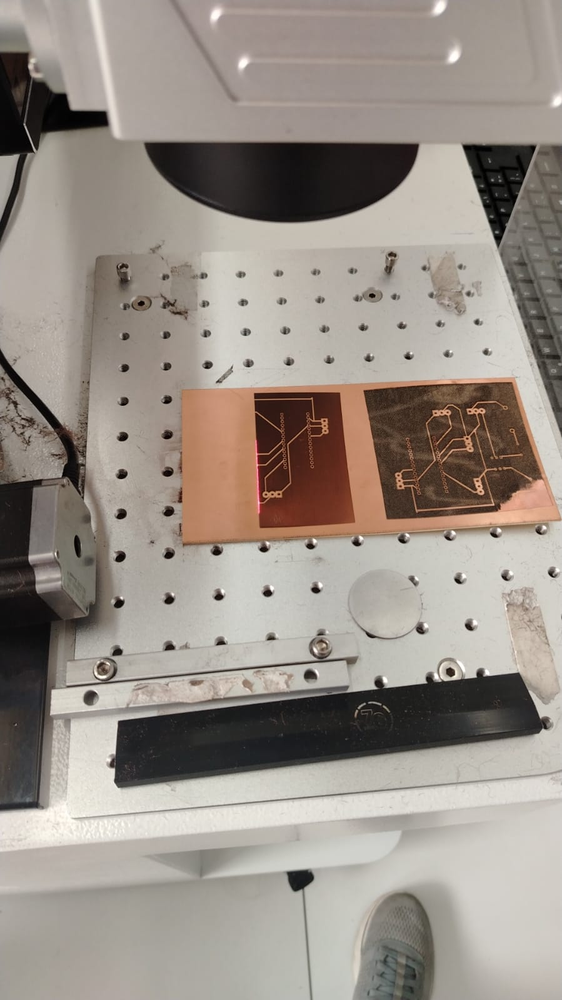
🎥 Video del Proceso
Explicación del Proyecto
En esta sección se presenta un video donde se explica el proceso completo del proyecto, desde la etapa de análisis QFD, bocetos, diseño, impresión 3D, desarrollo electrónico, fabricación de la placa y pruebas de funcionamiento del basurero clasificador.
📂 Descargables
Código del Sistema
Código utilizado para controlar el servomotor y el sistema de clasificación.
Disponible prontoEl diseño electrónico en KiCad y el código de programación aún se encuentran en proceso de documentación, por lo que serán publicados en una futura actualización de este proyecto.
El proyecto permitió integrar diseño, fabricación digital y electrónica en el desarrollo de un basurero clasificador inteligente. A través del análisis QFD se definieron las características principales del producto, mientras que los bocetos y diseños permitieron seleccionar una propuesta funcional.
La división del trabajo facilitó el avance del proyecto, permitiendo que una parte del equipo se enfocara en el diseño e impresión de los contenedores y otra en el sistema electrónico. Finalmente, el uso de un servomotor, el diseño de la placa en KiCad y la fabricación de pistas de cobre permitieron construir un prototipo capaz de orientar la basura hacia el contenedor correspondiente.